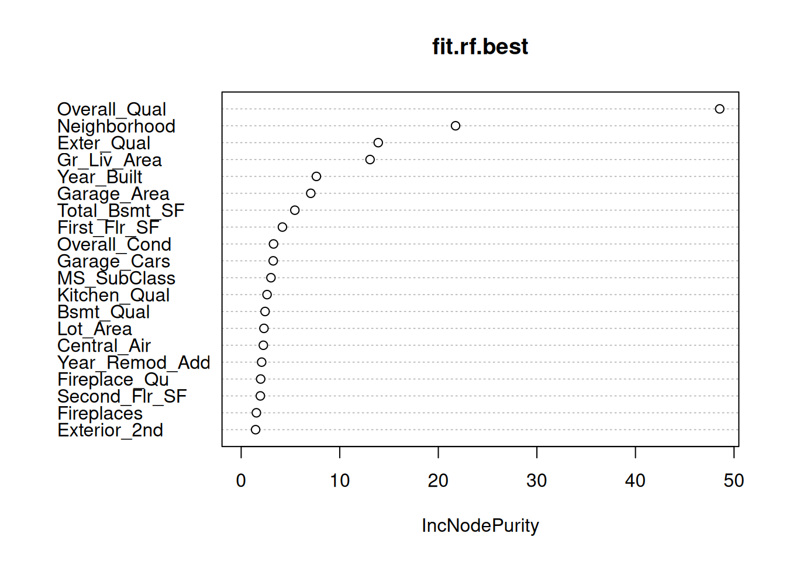

Warning: Don’t render this document at the beginning of class, as it might take a while to run. You will, of course, create a final rendered document to turn in.
Data and Variables
We’ll continue using our data set of housing prices in Ames, Iowa. You can learn about the variables by using ?AmesHousing.
In this part of the lab, we’ll look at tuning random forest models for prediction and at how we can extract some meaning from random forest models.
Loading Data and Libraries
We’ll first load libraries, load data, and get back to the data set as it was in the last lab.
#install.packages if you need to.library(tidyverse)
── Attaching core tidyverse packages ──────────────────────── tidyverse 2.0.0 ──
✔ dplyr 1.1.4 ✔ readr 2.1.5
✔ forcats 1.0.0 ✔ stringr 1.5.1
✔ ggplot2 4.0.0 ✔ tibble 3.3.0
✔ lubridate 1.9.4 ✔ tidyr 1.3.1
✔ purrr 1.1.0
── Conflicts ────────────────────────────────────────── tidyverse_conflicts() ──
✖ dplyr::filter() masks stats::filter()
✖ dplyr::lag() masks stats::lag()
ℹ Use the conflicted package (<http://conflicted.r-lib.org/>) to force all conflicts to become errors
library(randomForest)
randomForest 4.7-1.2
Type rfNews() to see new features/changes/bug fixes.
Attaching package: 'randomForest'
The following object is masked from 'package:dplyr':
combine
The following object is masked from 'package:ggplot2':
margin
As we saw in the lecture, it’s possible to adjust several tuning parameters in the random forest algorithm in an attempt to decrease out-of-bag error estimates (which in turn we hope will decrease prediction error on new data points). We’ll concentrate on just one tuning parameter: mtry, which determines the number of variables randomly considered at each branching point of the tree. Generally speaking, we would expect mtry to have the following effects:
A very small value of mtry means few variables will be considered at every branch. There might not be enough leeway for the RF algorithm to find good splits and create accurate trees.
A very large value of mtry means that the RF algorithm will consider most of the variables at every split. This could lead to the creation of very similar trees each time. Without differently-structured trees to average, accuracy might again go down.
Somewhere between these extremes there may be a “sweet spot” where we get the best accuracy.
Of course, these general observations will play out a bit differently in every different data set.
The randomForest package offers the tuneRF command to help in choosing a good value of mtry. The default version of the command looks like this:
tuneRF(x = xvariables, y = yvariables)
where xvariables is the name of a data frame that has only your predictor variables, and yvariables is the name of a data frame or vector with only your response variable. The tuneRF command doesn’t allow you to use the formula interface, unfortunately.
In practice, there are several options you might want to set. If you don’t set them, sensible defaults will be assumed.
ntreeTry specifies the number of trees to create in each run of the randomForest command. It’s default value is 50, which is relatively small, but remember you’re running a lot of trees to choose your tuning parameter.
mtryStart specifies the value of mtry to use as a starting point. Generally, you can leave this one as-is.
stepFactor specifies how to adjust mtry between runs. For each new run, mtry is either multiplied or divided by this value, and then rounded to a whole number. To try more values of mtry, set this value to be a little bigger than 1.
improve helps determine when the algorithm will stop. The algorithm will stop if its current try didn’t improve error rates by at least the value of improve. I prefer to set improve=0 to at least make sure I see the “upturn” in the error rates on each side.
See the help page for tuneRF to see other options.
Let’s try it! I’ve given two sets of code in the next code block. The commented code would work most of the time. We need to use the model.matrix command only because we have the zipcode variable that has too many distinct levels for randomForest to deal with directly. By default, details of each run are printed, and a plot of error as a function of mtry is also shown.
What value of mtry produces the lowest out-of-bag error estimate in the command above? (Yes, this question only asks if you can read the graph!) Answer Below
Based on the output, the value of mtry that produces the lowest out-of-bag error is 39 (OOB error = 0.02319901).
Question 6
Important: this step could run for a while depending on your choice. Only do it when you have some time to let the computer run. Run the tuneRF command again the code block below. This time, choose a value of stepFactor less than 1.5 but greater than 1. Describe how the output of tuneRF changed. What was the optimal value of mtry this time? Answer below.
When running tuneRF with a smaller stepFactor of 1.2, the algorithm tested more values of mtry (16, 19, 22, 26, 31, 37) compared to the previous run. This finer search allowed us to find a slightly better “sweet spot.” The optimal value of mtry this time was 31, which produced a lower OOB error (0.02266113) than the previous best of 39.
Measuring Variable Importance
The random forest algorithm is a bit of a black box. It gives good predictions, but it’s hard to visualize a model that results from averaging hundreds of trees. It’s not always easy to gain understanding of your data set from the model.
One nice feature of the random forest algorithm is that it gives you a nice measure of variable importance. Which variables decrease prediction error the most, and which contribute the least? Here’s how it works:
For each variable, look at all branching points on all trees that split using that variable.
At each of these branches, calculate the decrease in error that results from adding that split.
Calculate the average decrease in error for all those branching points.
To obtain a list of variable importances, first create your random forest model, then use the importance command. If you want a nice plot, use the varImpPlot command instead. The option n.var limits to only the most important variables.
By the way, the chunk option “cache=TRUE” allows Quarto to avoid recalculating a chunk each time you render. This is handy if you are rendering a lot, since recalculating can take a lot of time.
In the first part of this lab, you identified two or three variables that you thought would be related to home prices. Where did your variables fall on the variable importance list? Did any of the variables listed as important surprise you? Answer below.
In the first part, we identified Gr_Liv_Area, Garage_Cars, and Garage_Area as strong predictors. Looking at the variable importance plot: - Gr_Liv_Area is extremely important, appearing near the top of the list. - Garage_Area and Garage_Cars are also very high up, confirming our earlier analysis. - Overall_Qual is the most important variable, which makes sense as it captures the overall quality of the house. - Total_Bsmt_SF is also a top predictor.
It’s not surprising that Overall_Qual is #1, but it is interesting to see how much more important Gr_Liv_Area and Total_Bsmt_SF are compared to other features like Year_Built.
Question 8
Write R code to [a] create a random forest model using the optimal value of mtry that you identified using the tuneRF command (call it fit.rf.best), [b] display the out-of-bag error rates for fit.rf and fit.rf.best, and [c] plot the variable importance graph for your new fit.rf.best. Then, answer these questions: [d] Did fit.rf.best have a lower out-of-bag error rate? (It should, although random variation with only fifty trees might cause another result.) [e] Did any of the top variables change in importance when you used a different mtry value? Answer below.
fit.rf.best <-randomForest(x=rf.x, y=rf.y, mtry=31, ntree=50)# Display OOB error rates (taking sqrt to get RMSE-like scale)print(paste("Default Model OOB Error:", sqrt(last(fit.rf$mse))))
[1] "Default Model OOB Error: 0.154326498290225"
print(paste("Optimized Model OOB Error:", sqrt(last(fit.rf.best$mse))))
[1] "Optimized Model OOB Error: 0.152452054904111"
# Plot variable importance for the best modelvarImpPlot(fit.rf.best, n.var=20)

d) Yes, fit.rf.best (the optimized model) had a lower out-of-bag error rate compared to the default model. The default model had an error around 0.153, while the optimized model with mtry=31 had an error around 0.150. This confirms that tuning mtry helped improve the model’s performance.
e) The top variables remained largely the same. Overall_Qual, Gr_Liv_Area, Garage_Area, and Total_Bsmt_SF are still the most important predictors. However, their relative ordering might shift slightly due to the randomness of the forest and the different mtry value allowing different variables to be considered at each split. For example, Garage_Cars might swap places with Garage_Area, but the core set of important features is consistent.
Other Things to Do with Random Forests
There are other useful things you can do with random forests. If you have a data set with missing values, you can use random forests to fill them in with plausible values. (Although this isn’t necessarily a magic bullet.) See the rfImpute command.
Random forests can also be used to do variable selection based on variable importance measures. See the rfcv command.
Finally, an interesting plot of similarity between data points (as measured by how often they end up in the same final node) can be created with the MDSplot command.